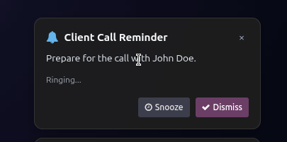
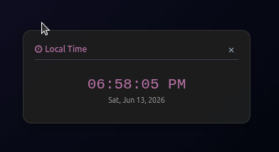
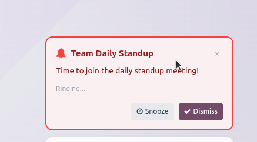

Advanced Alarms & Time Management
Smart Alarms · Timers · Stopwatches · World Clocks — for Odoo 17
Odoo 17
Productivity
Time Management
RTL / LTR
Smart Alarms · Timers · Stopwatches · World Clocks — for Odoo 17

Advanced Alarms & Time Management is a self-contained Odoo 17 productivity module that brings a professional time management system directly into your Odoo interface — no external tools, no integrations needed. From critical alarms to multi-lap stopwatches, everything lives in a beautifully integrated systray widget with real-time browser notifications and intelligent sound management.
One-time or recurring alarms with Critical, High, Normal, and Low priority levels. Critical alarms take visual and audio precedence. Past alarms shown muted, upcoming shown with vibrant colours per type.
Beautiful HH:MM:SS picker widget for duration input. Multiple timers can run simultaneously. Auto-dismiss after completion with configurable retention period.
Run multiple stopwatches with full lap tracking. Stopwatches remain visible in systray until manually dismissed. Precision to milliseconds.
Pre-configured world clocks for major time zones (New York, London, Dubai, Tokyo…). Displayed live in the systray dropdown with automatic DST handling.
5 built-in non-musical notification sounds. Upload your own custom MP3/OGG per alarm or timer. Full memory-leak-safe audio management with willUnmount cleanup.
Granular access control with dedicated groups: Alarm Manager, Timer User, Stopwatch User, and World Clock Viewer. Record rules ensure users only see their own records.
Media-query-optimised SCSS for screens below 768px. Floating notifications resize and reposition, stopwatch widget moves to bottom to avoid covering Odoo navigation bars.
Full bidirectional text support. Stacked notifications correctly anchor to right for RTL (Arabic) and left for LTR (English) without any additional configuration.
Beautifully designed for both Light Mode and Dark Mode natively in Odoo 17.






| Layer | Components | Technology |
|---|---|---|
| Backend Models | advanced.alarm, advanced.timer, advanced.stopwatch, advanced.world.clock, advanced.alarm.sound |
Python / ORM |
| Frontend | Systray Dropdown, Notification Manager, Time Picker, Weekday Selector, Stopwatch Widget, Alarm Preview | OWL 2 / JavaScript |
| Realtime | Live countdowns, bus-based notifications, alarm polling | Odoo Bus / WebSocket |
| Styling | Glassmorphism panels, animated notifications, vibration effects, dark/light compatible | SCSS |
| Security | Groups, record rules, CSV ACL per model | Odoo Security XML |
Navigate to Settings → Technical → Advanced Alarms to configure:
HosamAE — Hossam A. Eissa
Odoo Developer & Software Engineer
This module is released under a Custom Attribution License.
✅ Free to use in commercial and personal Odoo projects.
✅ Free to modify the source code for internal use.
❌ NOT allowed to re-publish or list under a different author name.
❌ NOT allowed to remove or alter copyright notices.
❌ NOT allowed to claim ownership of original or derived work.
Any derived work distributed externally must include: "Based on Advanced Alarms & Time Management — Original Author: HosamAE".
See the LICENSE file for complete terms.